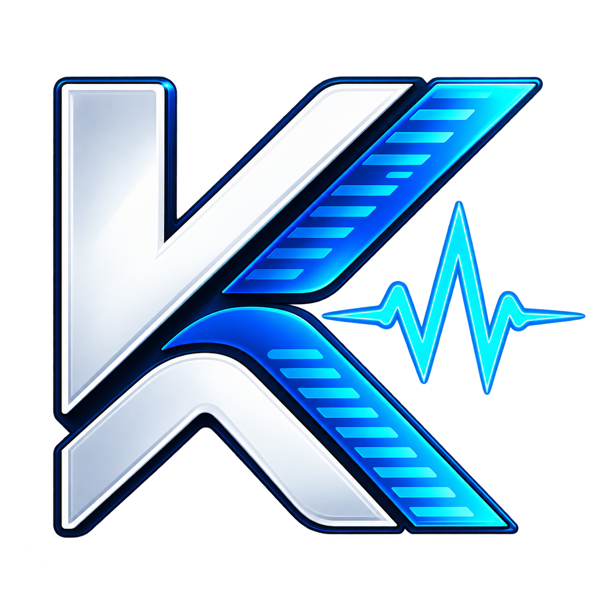

Tecnología transparente, cercana y bien construida.
KuyénDev nace en Osorno como un estudio tecnológico liderado por Franco Luna, con dos objetivos complementarios: crear sitios web rápidos y profesionales para negocios, y optimizar computadores para que rindan al máximo sin gastar de más.
¿De dónde viene el nombre KuyénDev?
Kuyén es la palabra en mapudungun para designar a la Luna. El nombre del proyecto es un homenaje a las raíces maternas de su fundador, Franco Luna, y un tributo a la geografía y cultura del sur de Chile, en la Región de Los Lagos.
El sufijo Dev representa el núcleo de ingeniería: el desarrollo de software, la precisión lógica y la vocación técnica por construir herramientas digitales útiles y duraderas.
No pretendemos parecer una corporación impersonal con cientos de empleados ni una agencia multinacional. Somos un estudio independiente donde el cliente trata directamente con el profesional que diseña su página o interviene sus equipos, con nombres y apellidos claros.

KuyénDev Next
Estudio Tecnológico
"Recuperar y optimizar antes de reemplazar."
Osorno, Región de Los Lagos · Asistencia para todo Chile
Nuestros principios fundamentales
Cada línea de código que escribimos y cada sistema operativo que configuramos se rige por estas convicciones:
1. Anti-Obsolescencia Programada
Creemos firmemente que miles de computadores descartados en oficinas y hogares están en perfecto estado de hardware, solo maltratados por software saturado. Optimizamos con Windows LTSC o migramos a Linux para extender la vida útil de los equipos y evitar gastos innecesarios.
2. Criterio Frontend: Código Limpio
En el desarrollo web no utilizamos constructores lentos que instalan 40 librerías para mostrar un párrafo. Desarrollamos con HTML y CSS modernos para lograr tiempos de carga instantáneos en las conexiones móviles de Chile.
3. Transparencia y Sin Cláusulas Ocultas
Hablamos en lenguaje comprensible, sin tecnicismos para confundirte. Si tu computador tiene una falla de hardware física irreparable por software, te lo decimos de inmediato. Si cotizas una página web, conoces con exactitud cada peso invertido y cada entregable.
4. Trato Directo con el Desarrollador
No hablas con un intermediario comercial que luego le traduce mal tu idea al técnico. Conversas y coordinas directamente con Franco Luna, asegurando que tus necesidades se reflejen de forma fiel en el producto final.
¿Conversamos sobre tu negocio o tus computadores?
Estamos en Osorno y disponibles para atender tus requerimientos digitales con seriedad y rapidez.